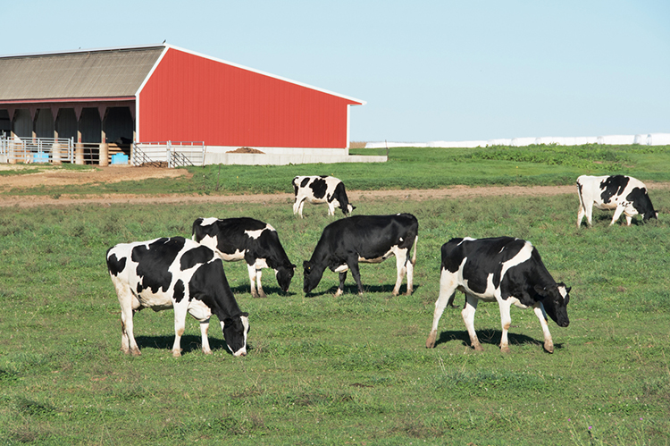
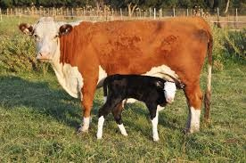
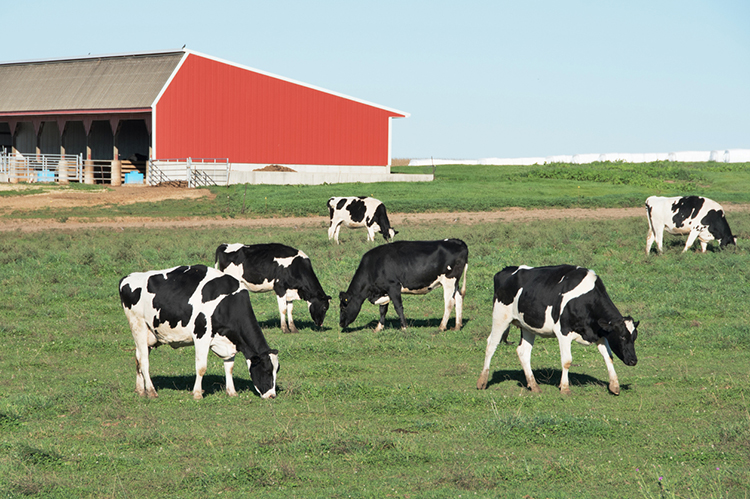
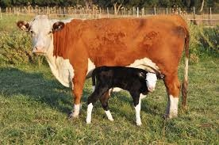

Why we love Cows
Cows are emotional, social animals who make and keep best friends, love physical affection, show an appreciation for music, and are deeply curious about other creatures and the world around them.
 Cows are emotional, social animals who make and keep best friends, love physical affection, show an appreciation for music, and are deeply curious about other creatures and the world around them.
 